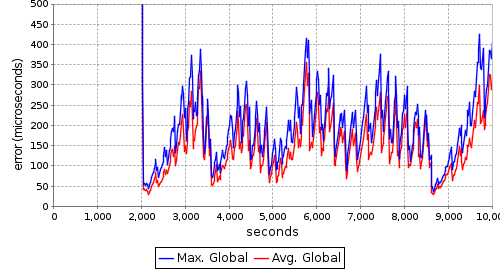
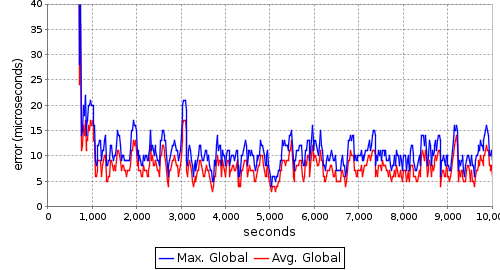
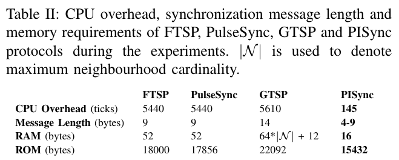

Kasım Sinan YILDIRIM - Ege University, Izmir, Turkey
Ruggero CARLI - University of Padova, Italy
Luca SCHENATO - University of Padova, Italy
PISync is a novel control theoretic time synchronization protocol for synchronizing sensor nodes in Wireless Sensor Networks (WSNs). It is based on a Proportional-Integral (PI) controller. It applies a proportional feedback (P) and an integral feedback (I) on the local measured synchronization errors to compensate the differences between the clock offsets and clock speeds. It has better or comparable performance over existing protocols in the WSN literature in terms of rate of convergence and steady-state error with the additional advantages of requiring minimal CPU overhead, memory allocation and code footprint independent of network size and topology, and of employing blind communication.
We developed two protocols namely FloodPISync and AvgPISync. FloodPISync requires a dynamically elected reference node, as in FTSP, and it disseminates the time information of this reference via flooding. AvgPISync does not require a reference node and all nodes in the network syncronize to their direct neighbors.
Click for the source code from repository.
The video below shows a real demo execution of AvgPISync on a testbed of MICAZ sensor nodes.
You can reach PISync article from Arxiv [here].
The figures below presents maximum and average maximum instantaneous synchronization errors of FTSP (left) and FloodPISync (right) on a line topology of 20 MICAz sensor nodes.
 
As compared to FTSP, FloodPISync is scalable in terms of steady state global synchronization error, which grows with the square root of the network diameter, unlike exponential growth with FTSP.
The following table presents a comparison of the existing time synchronization protocols in the literature with PISync in terms of resource requirements.

PISync does not store distinct time information and it allocates very little amount of RAM space, a factor 3 to 10 smaller than existing protocols, even in very dense networks.
The code size of PISync is compact with an improvement between 15 − 30% as compared to alternative protocols, which provides remarkable gain for sensor nodes where flash memory is a scarce resource.
PISync is lightweight in terms of CPU usage since it requires more than an order of magnitude fewer operations as compared to the available protocols.